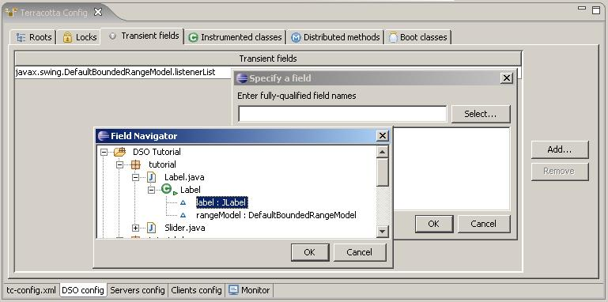

Sometimes an object referenced by a shared root contains fields that aren't appropriate for clustering. Some types of objects are just not meant to be shared across nodes, being inherently associated with a host-specific resource. For example, a Logger is meant to direct output to a file in a particular location on a specific host. Clustering a Logger would be problematic and shouldn't be done. For cases like this, DSO lets you specify the Logger instance, by fully-qualified field name, as a DSO transient field. Such as field will not be clustered by DSO, much like a field marked as a Java transient field does not participate in serialization.
Use
the Transient fields tab of the DSO Config page of the Terracotta Config editor
to list the fields of your shared objects that you would like to exclude from
sharing.

You can manually list the fully-qualified names of your transient fields or select them from a chooser. Alternately, you can navigate to a field in the Workspace browser and use the Terracotta context menu to mark the fields as Transient.
To re-initialize your DSO transient fields when their containing instance is materialized on a client, use the On load attribute of containing types instrumentation rule to specify a method to be invoked or some BeanShell script to be executed. Refer to Class instrumentation for more details on the On load attribute.
For more information on the
concept of DSO transient fields refer to DSO Transient
Fields.